Coursera-DL • Convolutional Neural Network
- Overview
- Edge Detection in Convolutional Neural Networks (CNN): A Deep Dive
- Padding
- Strided Convolutions
- Convolutions over volume
- Building One Layer of a Convolutional Neural Network (CNN)
- Simple Convolutional Network
- Pooling Layers in CovNets
- Building a CNN
- Why are Convolutions Useful?
- Training a Convolutional Neural Network
- Classic Neural Network Architectures
- ResNets
- Why do ResNets work?
- 1x1 Convolutions
- Practical advice for CNNs
- Object Localization
- Landmark Detection in Neural Networks: A Technical Summary
- Object Detection
- Convolutional Implementation of Sliding Windows
- Bounding Box Predictions
- Intersection Over Union (IoU) in Object Detection:
- Non-max suppression
- Anchor boxes
- YOLO
- R-CNN (Regions with Convolutional Neural Networks)
- Face Recognition
- Siamese Network for Face Recognition
- Triplet Loss for Neural Network Training in Face Recognition
- Face Verification and Binary Classification
- Deep CNNs
- Neural style transfer
- Cost function
- Style cost function in neural style transfer
- 1D and 3D Generalizations
Overview
- Computer Vision is a branch of computer science that focuses on enabling machines to interpret and make decisions based on visual data.
- It encompasses various applications ranging from facial recognition, object detection, medical image analysis, to augmented reality.
- Techniques used in computer vision often rely on pattern recognition, deep learning, and artificial neural networks. Tools such as convolutional neural networks (CNNs) have been particularly influential in advancing the field.
Edge Detection in Convolutional Neural Networks (CNN): A Deep Dive
-
Edge detection refers to the process of identifying points in a digital image where there are abrupt changes in pixel intensity. These points usually represent object boundaries and are therefore useful for segmentation, recognition, and other image analysis tasks.
- What is Convolution Operation?
- At its core, the convolution operation is a mathematical process, used extensively in image processing and, in this context, within Convolutional Neural Networks (CNNs).
- This operation helps neural networks analyze visual images by passing over different parts of an image and extracting features like edges, textures, and other components.
- The Role of Convolution in CNNs:
- In the hierarchical structure of CNNs, the initial layers primarily focus on edge detection.
- As you move deeper into the network, subsequent layers can identify more complex structures, from parts of objects to entire recognizable objects like faces or cars.
- This hierarchy builds from the foundation of edge detection.
- Why Edge Detection Matters:
- Before identifying complex objects in an image, it’s essential to recognize simpler forms first, like edges.
- For instance, to recognize a building, the network first detects the straight lines and corners (edges) that form its outline.
- Similarly, to understand human figures, the network starts by identifying the vertical edges that outline a person.
- Breaking Down Grayscale Images:
- Images can be represented as matrices of numbers. In our context, a grayscale image, void of color information, is used, which is represented as a 6x6 matrix.
- The values in this matrix represent the intensity of each pixel, with higher values for brighter pixels and lower values for darker ones.
- Introduction to Filters (or Kernels):
- Filters are essentially small matrices themselves, like the 3x3 matrix used in the example.
- These filters are designed to detect specific features. For vertical edge detection, we use a filter that has high values on one side and low values on the other.
- The 3x3 filter mentioned has high values on the left, neutral in the middle, and low values on the right, making it ideal for detecting vertical edges.
- How Does Convolution Work with Filters?
- The convolution operation involves sliding this filter over the image matrix.
- At each position, an element-wise multiplication between the filter and the part of the image it covers is performed. The results of these multiplications are summed up to get a single value in the output matrix.
- This process is repeated as the filter moves across the entire image, resulting in a new matrix that highlights the detected features (like edges).
- Interpreting the Convolved Image:
- The resulting matrix (or image) from the convolution process can be visualized to see the detected features.
- Bright spots in this image indicate strong matches with the filter. In our case of vertical edge detection, a bright line in the middle of the output image shows the presence of a vertical edge in the original image.
- Practical Considerations in Programming:
- Programmers and data scientists don’t usually perform convolution manually. Instead, they leverage pre-existing functions in deep learning frameworks.
- For instance, TensorFlow has
tf.nn.conv2dand Keras hasconv2d. These functions simplify the convolution process, but it’s crucial to understand the underlying concept to use them effectively.
- Concluding Thoughts:
- The convolution operation, though mathematically simple, plays a pivotal role in enabling CNNs to detect features in images, starting from basic edges to intricate patterns.
- It serves as the building block upon which more complex image recognition tasks are achieved, making it a cornerstone in the realm of computer vision.
- What is Convolution Operation?
Padding
- Introduction to Padding in Convolutions:
- Convolution with filters can lead to the reduction of image dimensions.
- Example: A 6x6 image convolved with a 3x3 filter results in a 4x4 image.
- Issues with Dimension Reduction:
- Rapid Shrinkage: With multiple layers in a deep neural network, continuous reduction can lead to very small dimensions.
- Edge Information Loss: Pixels on the edges are less frequently used in the convolution process compared to the central pixels. This means that information from edges can get overlooked.
- How Padding Works:
- To combat the reduction in size and preserve edge information, padding can be added to the image.
- Padding involves adding layers of pixels (usually zeros) around the image.
- Example: Padding a 6x6 image with 1 pixel all around converts it into an 8x8 image.
- Mathematical Relation with Padding:
- Original Formula: Output size = \(n - f + 1\)
- With Padding: Output size = \(n + 2p - f + 1\) (where \(p\) is the padding amount)
- Types of Convolutions based on Padding:
- Valid Convolutions: No padding is added.
- Output = \(n - f + 1\)
- Same Convolutions: Padding is adjusted so that the output size remains the same as the input size.
- For this, padding \(p\) should be \(\frac{f-1}{2}\).
- Valid Convolutions: No padding is added.
- Filter Sizes Convention in Computer Vision:
- Odd-numbered filter sizes like 3x3, 5x5, etc., are favored.
- Benefits of Odd-sized Filters:
- Symmetrical padding is possible.
- There exists a central pixel in the filter, making it conceptually easier to manage.
- Conclusion on Padding:
- Padding ensures that image dimensions are preserved and edge information is retained during convolution operations.
- In deep learning practices, you can specify padding either by its value or by using terminologies like “valid” (no padding) or “same” (padding to maintain dimension).
Strided Convolutions
- Strided convolutions are an essential aspect of Convolutional Neural Networks. These convolutions differ from the standard ones as they jump or “stride” over the input image or matrix rather than moving one step at a time. Using an example of a 7x7 image and a 3x3 filter, a stride of two results in the output being a 3x3 matrix. The input and output dimensions can be calculated with the formula:
\(\frac{N + 2P - F}{S} + 1\)
- where:
- N = size of the image (or input matrix),
- F = size of the filter,
- P = padding, and
- S = stride.
- where:
- If the resulting fraction isn’t an integer, it’s rounded down. This is known as the floor function.
- It’s important to clarify the terminology between cross-correlation and convolution. Technically, the process often referred to in deep learning as “convolution” doesn’t include a “flipping” step and is technically called “cross-correlation.” However, this distinction doesn’t affect neural network implementations, as omitting the flipping operation simplifies the code without compromising the model’s effectiveness.
- The main takeaway is understanding how to implement strided convolutions, how to calculate the resulting matrix size, and the difference in naming conventions between deep learning and more traditional mathematical disciplines. The next topic will expand on convolutions over volumes, not just matrices.
Convolutions over volume
- **3D Convolutions: **
- Unlike the 2D convolutions on grayscale images, 3D convolutions involve multi-channel images, like RGB images (3 channels: Red, Green, Blue).
- A 3D filter (e.g., 3x3x3 for RGB images) is used that has the same number of channels as the input image. Each channel of the filter will convolve with the corresponding channel of the image.
- Result: A 2D activation map. Multiple filters will produce a volume with a depth corresponding to the number of filters.
- **Computation: **
- The filter is placed on the top-left corner of the input volume and a dot product of the overlapping values is computed to produce a single output pixel.
- This process is repeated across the entire image. The output from this operation forms a 2D activation map.
- When multiple filters are used, multiple 2D activation maps are produced, which are stacked together to form the output volume.
- Multiple Filters:
- Using multiple filters allows the convolutional layer to detect multiple features from the input.
- Each filter specializes in detecting a specific type of feature (e.g., vertical edges, horizontal edges, textures, etc.).
- If two filters are used, the output will be of size 4x4x2. The depth (or number of channels) of the output corresponds to the number of filters.
- Dimensions:
- If you have an \(n \times n \times n_C\) input (where \(n_C\) is the number of channels) and a \(f \times f \times n_C\) filter, the output will have dimensions: \((n-f+1) \times (n-f+1) \times n_{C'}\), where \(n_{C'}\) is the number of filters used.
- This assumes a stride of one and no padding. If stride and padding are introduced, dimensions would be affected accordingly.
- Terminology:
- Depth and Channels are often used interchangeably in the literature to refer to the third dimension of the image or filter. However, using “channels” can be clearer to avoid confusion with the depth of a neural network.
Building One Layer of a Convolutional Neural Network (CNN)
- 3D Convolution with Filters:
- A 3D volume (e.g., a color image) can be convolved with different filters. For example, with two filters, you can get two different 4x4 outputs.
- Applying Bias and Non-linearity:
- After convolution with each filter, add a bias (a single number) to all elements of the output and then apply a non-linearity (like the ReLU activation function). This process results in 4x4 outputs with applied bias and non-linearity.
- Stacking the Outputs:
- The resulting outputs from the convolution of different filters can be stacked together to create a 3D volume. For example, if two 4x4 outputs were obtained from the convolution, the stacked result would be 4x4x2.
- Analogy with a Standard Neural Network:
- The process in a CNN layer is similar to a standard neural network layer where: \(z1 = w1 \times a0 + b1\) and \(a1 = g(z1)\).
- Here, the input \(a0\) is analogous to the 3D image and the filters act like \(w1\). The output after convolution, bias addition, and activation function application is analogous to \(a1\).
- Number of Filters and Output Volume:
- The depth of the output volume corresponds to the number of filters used. For instance, if 10 filters were used, the depth would be 10, resulting in an output of size 4x4x10.
- Number of Parameters:
- Each filter has its set of parameters. For example, a 3x3x3 filter has 27 parameters, and adding the bias term results in 28 parameters per filter. So, if 10 such filters are used, the total parameters would be 280.
- Let’s break down the 3x3x3 filter:
- 3x3 - This typically refers to the spatial dimensions of the filter. It’s a small window with a width of 3 and a height of 3. This means that, for just a single channel, the filter has 3 x 3 = 9 parameters.
- x3 - This refers to the depth of the filter. In the context of an RGB image, for instance, a depth of 3 means that the filter has a separate 3x3 matrix for each of the three color channels (Red, Green, and Blue).
- So, for each of the 3 channels, we have a 3x3 filter:
- Channel 1: 3x3 = 9 parameters
- Channel 2: 3x3 = 9 parameters
- Channel 3: 3x3 = 9 parameters
- Adding up the parameters from all 3 channels, we get:
- 9 (for Red) + 9 (for Green) + 9 (for Blue) = 27 parameters in total.
- That’s why a 3x3x3 filter has 27 parameters. If you were working with grayscale images, you wouldn’t need the depth of 3, so a filter for such an image would only have 3x3 = 9 parameters.
- But for a 3-channel RGB image, the depth is essential to capture information from each channel, leading to 27 parameters.
- Notation for CNN:
- \(f^{[l]}\) - Filter size for layer \(l\).
- \(p^{[l]}\) - Padding for layer \(l\).
- \(s^{[l]}\) - Stride for layer \(l\).
- \(n^{[l]}_{H}\), \(n^{[l]}_{W}\), and \(n^{[l]}_{C}\) represent the height, width, and number of channels of the output volume in layer \(l\).
- The formula for calculating the output volume size, considering padding and stride, is given by: \((n + 2p - f)/s + 1\).
- Bias and Weights:
- The weights correspond to all the filters in a layer. The biases are associated with each filter.
- Notational Variations in the Community:
- While the video follows the convention of listing the height, width, and then the number of channels, it’s worth noting that there isn’t a universal standard in the deep learning community. Some frameworks or researchers might list the number of channels first.
Simple Convolutional Network
- Basic Idea:
- CNNs are a special kind of neural network designed for image data. Think of them as a series of filters applied over an image, each filter helping the computer “see” different aspects of the image, like edges, textures, colors, etc.
- As the image passes through more layers, these aspects get combined in different ways to recognize more complex patterns.
- Our Example:
- We’re teaching our computer to look at a picture and tell if there’s a cat in it.
How the Example Works:
- Starting Point: An image of a cat, which for a computer, is just a bunch of numbers representing pixel colors. This image is 39 pixels wide, 39 pixels tall, and has 3 color channels (Red, Green, Blue).
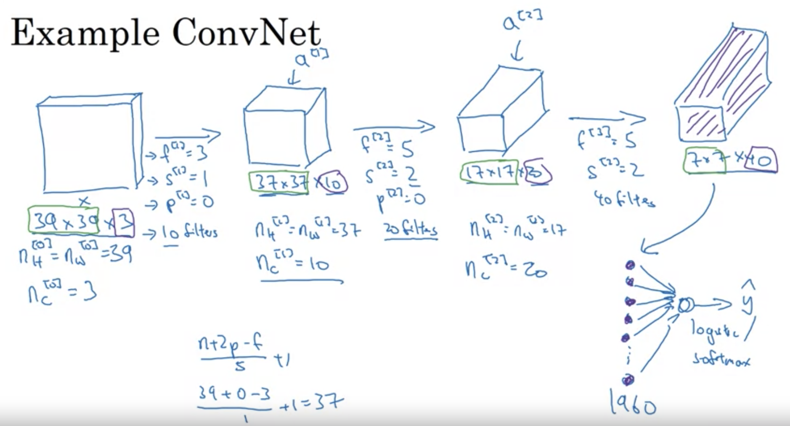
- Layer 1: Imagine putting a tiny 3x3 window on the top-left corner of this image and moving it around (like looking through a tiny square magnifying glass). This movement tries to capture details. For our example:
- We have 10 different tiny windows (or “filters”).
- After looking through these, we get a slightly smaller image of size 37x37, but with 10 channels now - each for the output of one tiny window.
- Layer 2: Now, we take another set of windows, but these are 5x5 in size. We also jump 2 pixels at a time (this is called a stride of 2). This time, after looking through the 20 windows:
- We get an even smaller image: 17x17, but with 20 channels.
- Layer 3: Same as before, but with another set of 5x5 windows, moving 2 pixels at a time. Using 40 different windows:
- Our image shrinks again to 7x7, but has 40 channels.
-
Flattening: Imagine taking our small 7x7x40 image and laying out all the numbers in a long line (or vector). That’s what “flattening” does. We end up with 1,960 numbers in a line.
- Making the Decision: We then use these numbers to make a final decision: is there a cat or not? This is done using something like a vote among the numbers.
- Key Terms:
- Filter/Window: A small matrix that “looks” at a portion of the image, helping to highlight features.
- Stride: How much you move the window each time.
- Channels: Think of these as different layers in the image, each one representing different features.
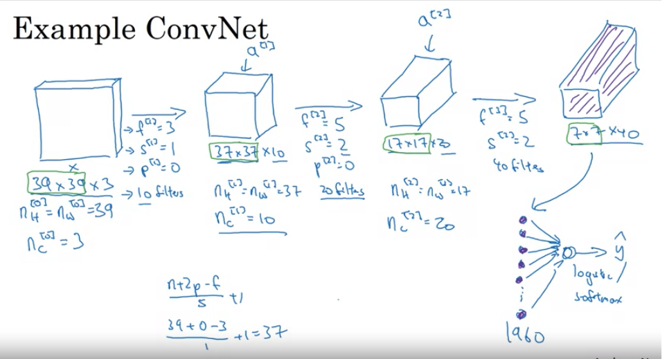
- Diagram (Simplified):
Original Image
[39x39x3]
|
V
Layer 1 (using 3x3 windows)
[37x37x10]
|
V
Layer 2 (using 5x5 windows)
[17x17x20]
|
V
Layer 3 (using 5x5 windows)
[7x7x40]
|
V
Flattened
[1960 numbers in a line]
|
V
Decision: Cat or Not?
Pooling Layers in CovNets
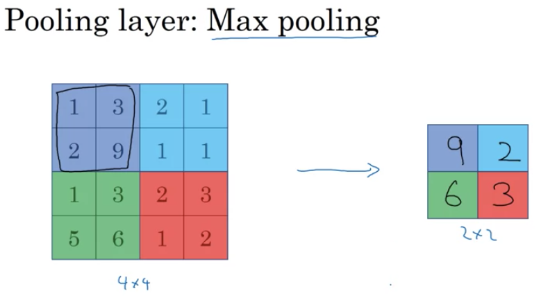
- Purpose:
- Pooling layers help reduce the size of the image representation, making computation faster and making some detected features more robust.
- What’s Pooling?:
- Think of pooling as a way to “summarize” a region of an image.
- For example, in “max pooling”, from a set of pixels, only the maximum value pixel is chosen, essentially highlighting the most prominent feature in that region.
- Max Pooling Example:
- Say you have a 4x4 grid of numbers.
- You want to create a summarized version of this grid which is 2x2.
- You’ll break the 4x4 grid into four 2x2 regions.
- For each region, pick the largest number. This forms your new 2x2 summarized grid.
- Intuition:
- A large value in a region suggests the presence of a feature (e.g., an edge or a specific texture).
- By taking the max value, if a feature is present in any part of the region, it gets preserved in the pooled output.
- However, the exact reason why max pooling is so effective remains a bit of a mystery in the deep learning community.
- No Learning Required!:
- Pooling has settings (like filter size and stride), but these are set by the designer, not learned by the network.
- Hence, there are no parameters to adjust during training for this process.
- Average Pooling:
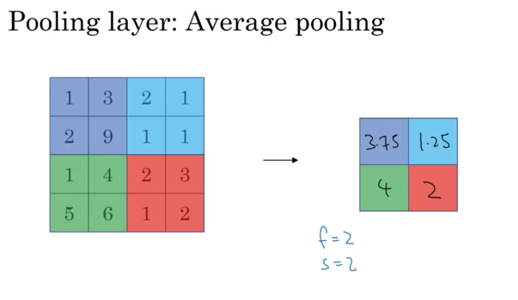
- Another type of pooling where you average the numbers in a region, rather than taking the max.
- It’s less common than max pooling but can be useful in specific scenarios, such as deep within a network to compress representations.
- Quick Facts:
- Pooling is done on each channel of an image independently.
- Hyperparameters include:
f(Filter size): Size of the region you look at.s(Stride): How much you move the filter each time.p(Padding): Rarely used in pooling. Typically,p=0(no padding).
- The output of pooling retains the same number of channels as the input.
- Pooling doesn’t change or learn. Once you set its parameters, it remains fixed.
- Overall:
- Pooling is a way to compress information in CNNs. By summarizing regions of an image, you can speed up computation and potentially make your network more robust.
Building a CNN
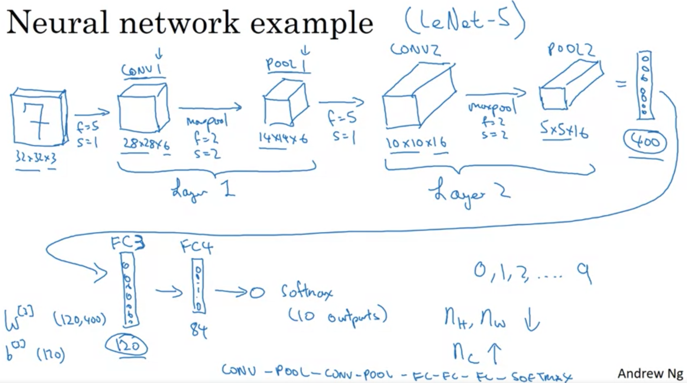
-
Input Layer: An image of size 32 x 32 x 3 (RGB). It means the image has a height and width of 32 pixels and has 3 channels (Red, Green, Blue).
- Convolutional Layer (Conv1):
- Uses a 5x5 filter.
- Stride of 1 (The filter moves one pixel at a time).
- No padding (So, the edges of the image are not extended).
- With 6 filters, the output dimension is 28 x 28 x 6.
- Stride: It’s the step size or the amount by which the filter slides over the input matrix. When the stride is 1, it moves one unit at a time.
- Padding: Helps retain the spatial size of the input image after convolution. No padding means spatial dimensions will reduce.
- Pooling Layer (Pool1):
- Uses max pooling, which takes the maximum value from the set of values covered by the filter.
- Filter size: 2x2.
- Stride: 2 (moves 2 pixels at a time).
- Resulting output: 14 x 14 x 6.
- Convolutional Layer (Conv2):
- 5x5 filter size.
- Stride of 1.
- Uses 10 filters.
- Output: 10 x 10 x 10.
- Pooling Layer (Pool2):
- Max pooling.
- 2x2 filter size.
- Stride of 2.
- Output: 5 x 5 x 10.
-
Flattening: The 5 x 5 x 10 output, which equals 250 units, is flattened into a single vector of 250 units.
- Fully Connected Layer (FC3):
- 400 units are densely connected to 120 units.
- This resembles a standard neural network layer.
- Fully Connected Layer (FC4):
- Consists of 84 units.
- The final output layer could be a softmax layer with 10 outputs, suitable for digit recognition (0 to 9).
Notes
- Notations can be inconsistent in literature. For example, whether to count pooling layers as individual layers or not.
- Convolutional layers use filters to learn features, pooling layers reduce spatial dimensions (size), and fully connected layers are used for final classification.
- Activation size tends to decrease as you go deeper into the network.
- Most parameters in CNNs are often in the fully connected layers, while the convolutional layers have fewer parameters.
Why are Convolutions Useful?
Advantages of Convolutional Layers
- Parameter Sharing:
- A feature detector useful in one part of the image is also useful in another part.
- A filter, like a vertical edge detector, applied to various positions in the image can reuse the same parameters.
- This helps reduce the number of parameters.
- E.g., a vertical edge detector for the upper left might also be useful for the lower right.
- Sparsity of Connections:
- In convolution, each output unit depends only on a small number of input units.
- Example: An output from a 3x3 convolution depends only on 9 input values. The rest of the pixels don’t affect this output.
- This results in fewer parameters, thus the network is less prone to overfitting.
Calculation Example
- A 32x32x3 image gives 3,072 units.
- Using a 5x5 filter with six filters results in a 28x28x6 output, which gives 4,704 units.
- Connecting all neurons between these two layers would give 14 million parameters.
- In comparison, the conv layer has only 156 parameters.
Translation Invariance
- A picture of a cat shifted by a few pixels is still a cat.
- CNNs handle this by applying the same filter across all positions in the image.
- This makes the network robust to translations.
Training a Convolutional Neural Network
Building a CNN
- Input: Image (e.g., a cat).
- Label: Can be binary or one of K classes.
- Structure: Several convolutional and pooling layers followed by fully connected layers and finally a softmax output.
Parameters:
- Conv layers and fully connected layers have weights (W) and biases (B).
Cost Function:
- Initialize the parameters randomly.
- Compute the cost J, which is the sum of losses of the neural network’s predictions on the entire training set.
- Use gradient descent or its variants (momentum, RMSProp, Adam, etc.) to reduce the cost function J.
Classic Neural Network Architectures
-
LeNet-5:
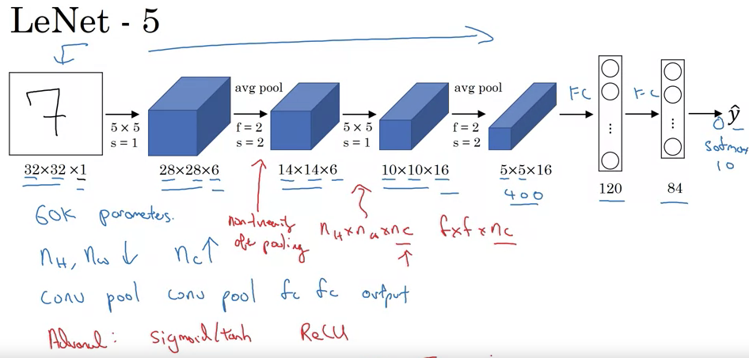
- Purpose: Recognize handwritten digits.
- Input: Grayscale image, 32x32x1.
- Architecture:
- Convolutional layer: Six 5x5 filters, stride of one, resulting in 28x28x6.
- Average pooling (modern versions use max pooling): Filter width two, stride of two, resulting in 14x14x6.
- Convolutional layer: Sixteen 5x5 filters, resulting in 10x10x16.
- Pooling layer: Reduces to 5x5x16.
- Fully connected layers.
- Output: 10 classes (digits 0-9).
- Features:
- Originally used sigmoid and tanh nonlinearities.
- Unique wiring of filters to specific input channels for efficiency.
- Applied non-linearity after pooling, specifically sigmoid.
- Total Parameters: ~60,000.
- AlexNet:
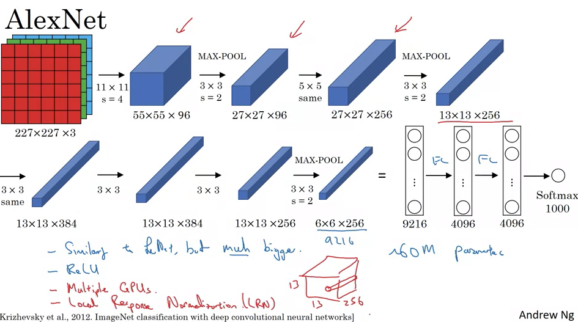
- Authors: Alex Krizhevsky, Ilya Sutskever, and Geoffrey Hinton.
- Input: RGB image, 227x227x3.
- Architecture:
- Convolutional layer: Ninety-six 11x11 filters, stride of four, resulting in 55x55x96.
- Max pooling: 3x3 filter, stride of two, resulting in 27x27x96.
- Several convolutional layers and pooling layers.
- Fully connected layers.
- Output: Softmax with 1,000 classes.
- Features:
- Used ReLU activation function.
- Trained using two GPUs with specific data sharing strategies.
- Included Local Response Normalization (LRN), though less commonly used now.
- Total Parameters: ~60 million.
- VGGNet (Specifically VGG-16):
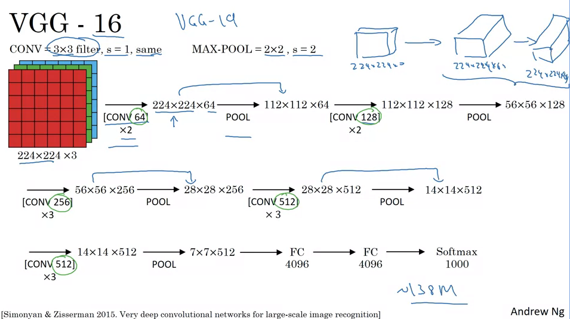
- Distinctive feature: Simplified architecture with repeated patterns.
- Input: RGB image, 224x224x3.
- Architecture:
- Convolutional layers use consistent 3x3 filters with stride of one and same padding.
- Max pooling layers are consistently 2x2 with a stride of two.
- Series of convolutional and pooling layers, incrementally increasing the depth (number of filters) while decreasing width and height.
- Several fully connected layers.
- Output: Softmax with 1,000 classes.
- Total Parameters: ~138 million.
- General Trends and Patterns:
- As neural networks progress from input to output, the height and width of the layers typically decrease while the depth (number of channels or filters) increases.
- Classic neural network architectures often consist of sequences of convolutional layers followed by pooling layers, ending with fully connected layers and an output layer.
ResNets
- Vanishing and Exploding Gradient Problems:
- As neural networks become deeper, gradients (which are passed backward from the output towards the input) can become very small (vanish) or very large (explode).
- Vanishing gradients slow down the learning process, since weights update in minuscule amounts, making convergence slow. On the other hand, exploding gradients can cause the model to fail to converge.
- Both issues arise due to the multiplicative nature of gradients through layers, especially when using activation functions like the sigmoid or tanh.
- Skip Connections:
- Also known as “shortcuts” or “residual connections,” these allow for the direct passing of information from a shallower layer to a deeper layer, bypassing some intermediate layers.
- They serve as a “highway” or “shortcut” for the gradients to flow back during backpropagation, making training deep networks more feasible and efficient.
- Residual Block:
- Traditional feed-forward networks require information to pass through every transformation of every layer.
- In a residual block, the main path involves usual linear and ReLU operations, but there’s also a shortcut path that bypasses these transformations.
- The residual connection adds the output of the shortcut (original input) to the main path before the activation function, hence the term “residual.”
- ResNet (Residual Network):
- A deep learning model architecture that uses multiple stacked residual blocks.
- The idea is to allow learning of “residual functions” – functions that capture only the difference (or residual) from the identity mapping. This makes it easier for the network to learn identity functions when necessary and thus avoids overfitting in deeper layers.
- ResNets can be very deep – having hundreds or even thousands of layers –- but can still be trained effectively due to the residual blocks.
- Comparison: Plain Network vs. ResNet:
- In a “plain network” without residual connections, as the depth increases, performance might plateau or even degrade. This is counterintuitive because deeper networks should, in theory, capture more complex patterns.
- ResNets, with their skip connections, mitigate this problem. The training error tends to either decrease or remain stable, even as the depth of the network increases significantly.
- Mitigating Gradient Problems with ResNet:
- The direct connections (or shortcuts) in ResNets alleviate the vanishing gradient problem since gradients can flow directly backward through the skip connections without getting too small.
- The architecture also guards against exploding gradients since the direct paths ensure that gradients don’t multiply excessively across many layers.
- Programming Exercise on ResNet:
- Practical experience is invaluable. Implementing ResNet from scratch or using existing frameworks will allow learners to grasp the intricacies and advantages of this architecture.
- This hands-on experience is supplemented by observing the performance of ResNet on real datasets and contrasting it against non-residual architectures.
- Deep Dive into ResNet’s Efficacy:
- Understanding why ResNets work so well is crucial. The ability of ResNets to learn identity functions, combined with the ease of training deeper networks without degradation, contributes to their success.
- Future lessons or discussions might provide more intuitive or mathematical explanations behind the phenomena observed with ResNet’s performance.
Why do ResNets work?
-
Degradation Problem in Deep Networks: In plain deep networks (those without residual connections), performance tends to degrade with an increase in depth. It becomes difficult for them to learn even the identity function, which might seem counterintuitive, given that deeper networks should have greater representational capacity.
-
Identity Function in ResNets: Residual networks, or ResNets, mitigate the degradation problem. The skip connections or short-cuts in ResNets allow them to easily learn the identity function. This essentially means that the outputs of certain layers can be directly fed into layers deeper in the network without any transformation.
- Mathematical Explanation:
- Given an activation \(a[l]\), the next activation after two layers can be represented as \(a[l+2]\) with the residual block.
- If the weight \(w[l+2]\) shrinks toward zero (perhaps due to L2 regularization), the activation can approximate the identity function. So, \(a[l+2] \approx a[l]\).
- This means that the deep network can behave similarly to a shallower one when needed, but also has the capacity to learn more complex functions if the data demands it.
-
Not Just About Maintaining Performance: The goal of using ResNets isn’t just about preventing degradation in performance. By making it easier to learn the identity function, you set a “performance floor.” From this baseline, the added layers can then focus on capturing any additional patterns in the data, potentially improving the model’s performance.
- Dimension Matching in Residual Connections:
- For the residual connections to work, the dimensions of the input and output of the skip connection must match.
- Same convolutions are commonly used to preserve these dimensions. If dimensions don’t match, a linear transformation (like using the matrix \(W_s\)) can be applied to match them.
- Visual Representation & Architecture:
- Looking at ResNets visually, as shown in the images from the paper, makes it clear how the skip connections work in tandem with the main network path. This design emphasizes the beauty of ResNets: they can easily fall back to the identity function but have the flexibility to learn more.
- Teaser for One by One Convolutions: One by one convolutions, which you hinted at for the next discussion, are an interesting and effective design choice in convolutional neural networks. They allow for dimensionality reduction and increased network depth without a significant increase in computational cost.
1x1 Convolutions
- One by one convolutions, also known as “Network in Network” or 1x1 convolutions, are influential techniques in neural network architectures. While at first glance it might seem like a 1x1 convolution would merely multiply values by a scalar, it is much more powerful, especially when considering multi-channel input.
- For a single channel image, a 1x1 convolution essentially multiplies the image by a scalar value. However, for multi-channel images, a 1x1xN convolution (where N is the number of channels) applies a unique scalar multiplication to each channel and can add non-linearity. This is like applying a fully connected neural network to each position in the input.
- One of the primary utilities of 1x1 convolutions is their ability to modify the number of channels in the output. For instance, if you have an input with many channels and you want to reduce that number, you can use 1x1 convolutions. This method is especially useful for computational efficiency and can be used to shrink, maintain, or increase the number of channels.
- This technique of 1x1 convolutions plays a crucial role in architectures like the inception network, as it provides a way to adjust and optimize channel dimensions, adding non-linearity and depth without a significant computational burden. The following content will delve deeper into the inception network and how 1x1 convolutions fit into its structure.
Practical advice for CNNs
Transfer Learning
- Transfer learning can significantly accelerate progress in computer vision applications by using pre-trained weights from someone else’s network instead of starting from scratch.
- Many available datasets online, like ImageNet, MS COCO, or Pascal, have been utilized by researchers, and their trained weights are available for download.
- Using a hypothetical example:
- If you want to build a cat detector for your specific cats, named Tigger and Misty, with limited photos, you can:
- Download an open-source neural network trained on large datasets.
- Remove the original softmax layer of the downloaded network.
- Add your softmax layer for “Tigger”, “Misty”, or “neither” classifications.
- Keep the previous layers’ parameters frozen and only train the newly added softmax layer.
- For efficiency, you can pre-compute and save the activations from the frozen layers since they won’t change.
- If you want to build a cat detector for your specific cats, named Tigger and Misty, with limited photos, you can:
- Depending on the amount of data you have:
- With more data, you can unfreeze and train more layers.
- With a massive dataset, consider using the pre-trained network merely as an initialization and train the entire network.
- Transfer learning is particularly valuable in computer vision due to large available datasets and the computational expense of training from scratch. It’s often recommended unless you possess a massive unique dataset and extensive computational resources.
Data Augmentation
- Data augmentation is a crucial technique to enhance the performance of computer vision systems, especially given the persistent need for more data in this domain. Unlike some areas where data sufficiency might be reached, computer vision consistently seems to require more. Common data augmentation techniques in computer vision include:
- Mirroring on the Vertical Axis: This method involves flipping an image horizontally. If the original image represents a certain object or feature, its mirrored version will often represent the same.
- Random Cropping: Different random crops of a dataset are taken. However, care should be taken to ensure these random crops still represent significant portions of the original image.
- Rotation, Shearing, and Local Warping: These methods involve rotating the image, shearing it, or applying local distortions, though they are used less frequently, possibly due to their complexity.
- Color Shifting: This involves distorting the R, G, and B color channels of an image. An advanced technique for color distortion, called PCA Color Augmentation, uses Principal Component Analysis to adjust color channels based on the dominant tints in an image.
- For practical implementation, especially with large training sets, one common method is to have a CPU thread dedicated to loading images and applying data augmentations. These augmented images are then sent to another thread or process for training, often on a GPU for large neural networks.
- Like other aspects of deep learning, data augmentation has its hyperparameters, like the degree of color shifting or the parameters for random cropping. A common starting point is using established open-source implementations, but individual tuning is encouraged based on specific needs. Overall, data augmentation is a powerful tool to improve computer vision models.
Object Localization
-
In the recent discussions, the focus has been on object detection in computer vision, which has seen significant advancements over the past few years. The sequence of learning starts with understanding object localization, which is foundational for object detection.
- Image Classification: It is about identifying what an object is in an image. For instance, recognizing that a given picture is of a car.
- Classification with Localization: This is a step beyond mere classification. The objective is not just to label an image (e.g., as a car) but also to determine its position by drawing a bounding box around it. The term “localization” relates to identifying the exact position of the identified object in an image.
- Detection Problem: This is more complex as it involves identifying multiple objects in an image, recognizing them, and then localizing each one.
- For the classification with localization problem:
- Images generally contain one primary object that the algorithm tries to recognize and localize.
- The classification techniques you’ve learned are essential for classification with localization, which, in turn, lays the groundwork for detection.
- To localize an object within an image:
- Neural networks can be adapted to output additional parameters that define a bounding box around the recognized object.
- These parameters, bx, by, bh, and bw, help determine the object’s position and size.
- The image’s top left is considered coordinate (0,0), and the bottom right is (1,1). Using this, the midpoint, height, and width of the bounding box can be defined.
- For supervised learning:
- The target label, y, is structured as a vector. It starts with a component pc, indicating the presence of an object (1 if present, 0 otherwise).
- If an object is detected, the next components, bx, by, bh, and bw, indicate the bounding box’s parameters.
- Following that, c1, c2, and c3 will indicate the object’s class (e.g., pedestrian, car, motorcycle).
- It’s presumed that there’s only one primary object in each image for this problem.
- On the topic of loss functions:
- If an object is present (y1 = 1), the loss is the squared difference between the predicted and actual values across all components.
- If no object is detected (y1 = 0), only the accuracy of pc is considered.
- For the classification with localization problem:
- Having neural networks output specific real numbers, almost like in regression tasks, to pinpoint items within an image is crucial. This approach is powerful and finds its application in various computer vision tasks.
Landmark Detection in Neural Networks: A Technical Summary
-
Purpose: Neural networks can be trained to detect specific points, or landmarks, on images. These landmarks help in applications like face recognition, emotion detection, and augmented reality effects.
- Bounding Box Representation: Neural networks can output bounding boxes using four numbers: bx, by, bh, and bw, where:
- bx, by: coordinates of the center of the box.
- bh, bw: height and width of the box respectively.
- Landmarks: Instead of bounding boxes, sometimes it’s preferable to get specific X and Y coordinates of points of interest. For instance:
- In face recognition, if you want to pinpoint the corner of someone’s eye, the network can output two numbers lx (landmark x-coordinate) and ly (landmark y-coordinate).
- If you want all four corners of both eyes, the network would output l1x, l1y, l2x, l2y, and so on for each point.
-
Multiple Landmarks: You can choose any number of landmarks on the image. For a face, you could select landmarks for the eyes, mouth, nose, jawline, etc. Using 64 landmarks as an example, the network would output 128 coordinates plus 1 output to detect if it’s a face, totaling 129 output units.
- Applications:
- Emotion Recognition: Detecting facial landmarks aids in understanding emotions by recognizing facial expressions.
- Augmented Reality: Applications like Snapchat utilize facial landmarks to superimpose effects, like crowns or hats, onto the face.
-
Training Data Requirement: The neural network needs labeled training data, where each landmark on multiple images has been annotated manually. Consistency is key. For instance, landmark one should always represent the same point (like a specific eye corner) across all images.
-
Pose Detection: Beyond faces, this landmark detection principle can be extended to detect human poses. By marking key points like shoulders, elbows, and the chest’s midpoint, the network can determine a person’s posture.
-
Consistency Across Images: It’s essential that the identity of each landmark remains consistent across different images. For instance, if landmark one represents the left eye’s corner in one image, it should represent the same in all other images.
- Use in Object Detection: While this video focused on landmark detection, these fundamental principles pave the way for more complex tasks, such as object detection.
- Landmark detection in neural networks is a versatile tool, enabling various applications from emotion recognition to augmented reality. The technique relies on outputting specific X,Y coordinates for predetermined points on images, requiring consistently labeled training data for effective learning.
Object Detection
- You’ve been introduced to Object Localization and Landmark Detection. Now, we’ll delve into the Sliding Windows Detection Algorithm for object detection using a convolutional neural network (CNN). Here’s a concise overview:
- Goal: Develop a car detection algorithm.
- Training Set Creation:
- Obtain closely cropped images of cars, where the entire image mostly centers on the car.
- The training set should contain positive examples (images with cars) and negative examples (images without cars).
- CNN Training:
- Train a CNN using the cropped images.
- The network predicts whether the input image has a car (output y = 1) or not (output y = 0).
- Sliding Windows Detection:
- Start with a test image.
- Define a window size and slide it across the image at varying strides, cropping out portions to feed into the trained CNN.
- For each cropped region, the CNN predicts whether it contains a car.
- This process repeats with varying window sizes, ensuring various object scales are detected.
- Challenges:
- Computational cost is significant due to the many cropped regions processed by the CNN.
- Coarser strides may decrease computation but reduce accuracy. Finer strides increase accuracy but are computationally expensive.
- Traditional methods using linear classifiers were more computationally efficient but less accurate than modern CNNs.
- Solution:
- Implement the Sliding Windows Object Detector more efficiently using convolutions, which will be discussed in the subsequent video.
- In essence, the Sliding Windows Detection method uses a CNN to scan various regions of an image to detect objects. However, its computational expense necessitates a more efficient implementation.
Convolutional Implementation of Sliding Windows
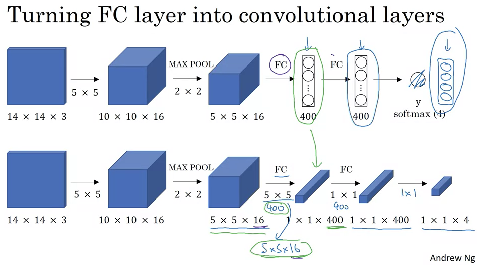
- Converting Fully Connected to Convolutional Layers:
- Consider an object detection algorithm that starts with a 14x14x3 image.
- This image is convolved using 16 filters of 5x5 size, resulting in an activation map of size 10x10x16.
- A 2x2 max pooling operation further reduces this to 5x5x16.
- Traditional neural networks then employ fully connected layers, which might connect to 400 units and then to another layer and finally output a probability distribution,
Y, over four classes using a softmax layer. - To transform this into convolutional layers, you can think of the fully connected layers as 1x1 convolutions. Specifically, the first fully connected layer is equivalent to applying a 5x5x16 filter 400 times, leading to an output volume of 1x1x400. This operation is just like having 400 neurons in a fully connected layer, each looking at all the activations from the previous layer.
- Subsequent fully connected layers can also be represented as 1x1 convolutional layers. For example, another 1x1 convolution can be used to get a 1x1x400 output again.
- Convolutional Implementation of Sliding Windows:
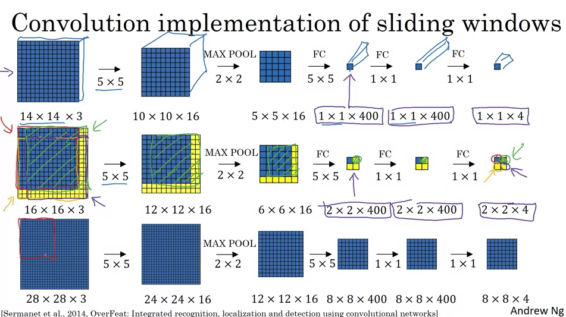
- In the traditional sliding windows algorithm, if you had a 16x16x3 image and wanted to detect objects in every possible 14x14 region, you’d run the CNN four times: once for each 14x14 region in the 16x16 image.
- This method is computationally expensive since there’s a lot of overlap between the regions. A significant portion of the computations are being repeated.
- Using the convolutional approach, instead of extracting and processing each region separately, you apply the CNN on the entire 16x16 image. When you do this, you get an output that’s larger than before, say 2x2x4 for our example.
- Each 1x1x4 slice of this output corresponds to the predictions for a different 14x14 region in the 16x16 image.
- When you use a larger image, say 28x28x3, this convolutional approach produces an 8x8x4 output, representing the predictions for many overlapping 14x14 regions. This is done without having to run the CNN multiple times on many different crops of the image.
- Essentially, by convolving the entire image at once, the computations for overlapping regions are shared, making the whole process much more efficient.
- However, there’s a challenge: the bounding boxes produced by this method might not be very precise. Further refinements, possibly discussed in subsequent videos, would address this limitation.
- This convolutional implementation of sliding windows significantly boosts efficiency by eliminating redundant calculations, making real-time object detection more feasible.
Bounding Box Predictions
- The content provided delves into the YOLO (You Only Look Once) algorithm for more accurate bounding box predictions. Here’s a summary of the main points discussed:
-
Sliding Windows Limitation: The convolutional implementation of sliding windows is computationally efficient, but it doesn’t always generate accurate bounding boxes, as it might not match the object’s actual position or shape.
-
YOLO Introduction: YOLO, standing for “You Only Look Once,” was introduced by Joseph Redmon, Santosh Divvala, Ross Girshick, and Ali Farhadi. It’s an algorithm that allows for more precise bounding box predictions.
-
Grid-based Classification: The idea is to overlay a grid on the image, and for each cell, predict if there’s an object and its associated bounding box. The object’s midpoint determines which grid cell is responsible for predicting it.
- Label Vector Structure: Each grid cell generates a vector
Ycontaining:- A binary value indicating the presence of an object.
- Four values (bx, by, bh, bw) defining the bounding box.
- Class probabilities for each possible object (e.g., pedestrian, car, motorcycle).
-
Training Process: The neural network learns to map from an input image to an output volume where each slice is the vector
Yfor the corresponding grid cell. - Advantages of YOLO:
- It can produce bounding boxes of various shapes.
- It has a convolutional implementation, making it efficient and suitable for real-time object detection.
-
Bounding Box Encoding: The bounding box is parameterized relative to the grid cell it’s in. Coordinates (bx, by) indicate the center of the bounding box, relative to the cell’s dimensions. The width (bw) and height (bh) are represented as fractions of the cell’s dimensions.
-
Paper Complexity: The YOLO paper is considered complex, and even seasoned researchers might find it challenging to understand its intricacies.
- Next Steps: There are additional techniques and modifications that can further enhance the YOLO algorithm, which will be discussed in subsequent content.
From the provided notes, it seems the topic revolves around the concept of “Intersection Over Union” (IoU) as it pertains to object detection algorithms, specifically in the context of evaluating how well these algorithms perform in terms of localization. Here’s a summary of the notes:
Intersection Over Union (IoU) in Object Detection:
-
Purpose: IoU serves as a measure to evaluate the effectiveness of object detection algorithms, especially regarding their localization accuracy.
- Calculation:
- Intersection: The shared area between the ground-truth bounding box and the predicted bounding box.
- Union: The area covered by either the ground-truth or the predicted bounding box or both.
- IoU Value: \(\frac{\text{Intersection}}{\text{Union}}\)
- Benchmark:
- Conventionally, an IoU value greater than 0.5 indicates a reasonably accurate prediction.
- However, for stricter evaluations, thresholds like 0.6 or 0.7 can also be used.
- A perfect overlap (predicted bounding box matches the ground truth) yields an IoU of 1.
- Usage:
- Evaluating Localization Accuracy: Determine how many times the algorithm correctly detects and localizes an object based on set IoU thresholds.
- Comparing Bounding Boxes: As a measure of similarity between two boxes.
-
IoU is also crucial for “non-max suppression,” a technique to refine the outputs of the YOLO (You Only Look Once) object detection framework.
- Note: IoU, in this context, should not be confused with the common term “I owe you,” indicating a debt.
Non-max suppression
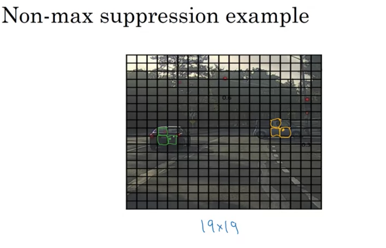
-
Problem: Object detection algorithms often detect multiple bounding boxes for the same object.
-
Solution: NMS ensures that only one bounding box is retained for each detected object.
Example:
-
Context: Suppose we are detecting pedestrians, cars, and motorcycles in an image with a 19x19 grid overlay.
-
Issue: Even though a car may technically lie within one grid cell, multiple neighboring cells might also claim they detected the same car due to the algorithm’s localization process. This results in multiple bounding boxes for the same object.
How NMS Works:
- Filtering:
- Discard all bounding boxes with a probability (Pc) below a certain threshold (e.g., 0.6). This helps eliminate weak detections.
- Selection:
- Among the remaining boxes, select the box with the highest probability.
- Suppress (discard) any nearby bounding box that has a high Intersection over Union (IoU) with the chosen box. This ensures that only the most probable bounding box for an object is retained, while overlapping ones are removed.
- Repeat the process until all boxes are either selected or suppressed.
- Multiple Object Classes:
- When detecting multiple objects (like pedestrians, cars, and motorcycles), perform NMS independently for each object class.
Outcome:
- The result is a refined set of bounding boxes, where each detected object is represented by only one bounding box.
Anchor boxes
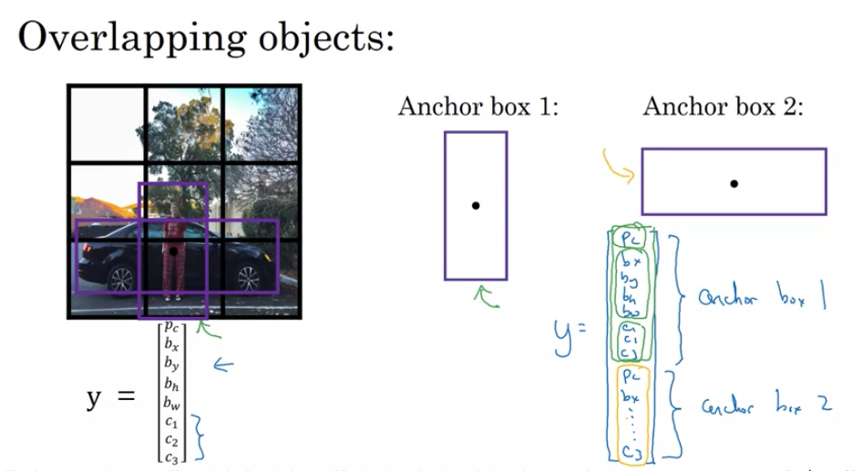
- Problem Statement:
- When multiple objects are present in the same grid cell, a traditional detection system can’t recognize both of them.
- Objects with different shapes might have similar midpoints, leading to conflicts.
- Solution: Anchor Boxes
- Pre-defined shapes called anchor boxes allow grid cells to detect multiple objects.
- Each object in an image gets associated with an anchor box that best represents its shape.
-
How Anchor Boxes Work:
-
Pre-define Shapes: Choose anchor box shapes that represent common object shapes in the dataset. For simplification, let’s say there are two anchor boxes.
- Label Encoding with Anchor Boxes:
- Each object in a training set image is assigned to the grid cell containing its midpoint.
- Additionally, it’s matched to the anchor box that has the highest Intersection-over-Union (IoU) with the object’s shape.
- The output label
Yfor each grid cell becomes3 x 3 x 16(if there are two anchor boxes) instead of3 x 3 x 8without anchor boxes. - This can be viewed as
3 x 3 x 2 x 8(3x3 grid, 2 anchor boxes, and 8 features for each object - presence, bounding box coordinates, and class probabilities).
- Labeling Examples:
- If a grid cell contains a pedestrian (more similar to anchor box 1) and a car (similar to anchor box 2), the first half of the
Ylabel vector will encode the pedestrian details and the second half will encode the car details. - If only a car is present in the grid cell, the first half of the
Ylabel (corresponding to anchor box 1) will indicate no object, and the second half will encode the car.
- If a grid cell contains a pedestrian (more similar to anchor box 1) and a car (similar to anchor box 2), the first half of the
-
-
Potential Issues:
-
Multiple Objects, Same Anchor Box: If two objects in a grid cell match the same anchor box shape, the system can’t handle it perfectly. A default tiebreaker or method needs to be implemented.
-
More Objects than Anchor Boxes: For instance, three objects in a grid cell but only two anchor boxes. Again, a default strategy or tiebreaker is required.
-
-
Why Use Anchor Boxes:
-
Specialization: The algorithm can specialize in detecting objects of different shapes. For example, one set of outputs might become specialized in detecting tall, narrow objects, while another set focuses on wider objects.
-
Handling Overlaps: Even if overlaps in grid cells are rare (like in a 19x19 grid), anchor boxes help in such scenarios.
-
-
Choosing Anchor Boxes:
-
Manual Selection: Initially, anchor boxes were hand-picked based on the variety of object shapes in the dataset.
-
Advanced Technique: Implement K-means clustering on the dataset shapes to select representative anchor boxes automatically.
-
- Anchor boxes improve the object detection capabilities of models like YOLO by allowing each grid cell to detect multiple objects of varying shapes.
- By associating objects with appropriate anchor boxes, the model can handle overlapping objects and specialize its outputs for different object shapes.
YOLO
- YOLO (You Only Look Once) is an advanced object detection method that differs from other detection methods in that it views object detection as a regression problem to spatially separated bounding boxes and associated class probabilities. Instead of producing thousands of proposals and selecting the best ones, YOLO performs detection and classification in a single forward pass of the network. Here’s a detailed breakdown of the tech notes you provided:
- Training Set Construction:
- Objective: To detect pedestrians, cars, and motorcycles, and possibly other classes in the full image.
- Anchor boxes: These are predefined shapes to help the algorithm predict bounding boxes. They’re based on shapes of objects you commonly expect in your dataset.
- Output Volume: If you are using a
3x3grid with two anchor boxes and have three classes to detect (pedestrian, car, motorcycle), the output volume will be3x3x16. This is because:- There are two anchor boxes: hence two sets of predictions.
- For each anchor box, we have:
- \(P_c\): Probability that there’s an object.
- \(b_x, b_y\): Center coordinates of the bounding box.
- \(b_h, b_w\): Height and width of the bounding box.
- \(c_1, c_2, c_3\): Class probabilities.
- So, each anchor box outputs an 8-dimensional vector, and with two anchor boxes, that’s 16 values.
- Making Predictions:
- When the neural network processes an image through the forward pass:
- For grid cells that contain no object, the network should output values close to zero for \(P_c\).
- For grid cells containing an object, the network will output the corresponding bounding box and class probability information.
- When the neural network processes an image through the forward pass:
- Non-Max Suppression (NMS):
- This step is vital for filtering multiple bounding boxes.
- For each grid cell, two bounding boxes (or as many as you have anchor boxes) will be predicted.
- Discard boxes with a low objectness score (\(P_c\)).
- For overlapping boxes, keep the box with the highest objectness score and discard the others. This process is done independently for each object class.
- This step is vital for filtering multiple bounding boxes.
- Advantages of YOLO:
- Speed: Because it processes the image in a single forward pass, YOLO is much faster than other object detection algorithms, making it suitable for real-time detection.
- Global Context: As YOLO processes the entire image, it has a better context for detection, leading to fewer false positives in backgrounds.
- Challenges with YOLO:
- Handling overlapping objects: Since each grid cell can predict only a fixed number of boxes (equal to the number of anchor boxes), YOLO might struggle with overlapping objects.
- Fine-grained detection: If there are many small objects in close proximity, YOLO might find it challenging to detect all of them.
- The YOLO algorithm has seen several updates since its initial release. Each version comes with its own set of improvements in terms of speed, accuracy, and features. The foundational ideas remain consistent across versions, emphasizing end-to-end object detection in a single forward pass of the network.
R-CNN (Regions with Convolutional Neural Networks)
- Problem with Sliding Windows: Traditional sliding windows method would involve examining every possible window in an image, which is computationally intensive and not efficient, especially when many regions don’t contain any objects.
- Solution – Region Proposals: Instead of testing every possible window, R-CNN uses a segmentation algorithm to propose a smaller number of candidate object regions. It then runs a CNN classifier on each of these proposed regions.
- Segmentation Algorithm: This algorithm finds “blobs” or regions in the image that could contain objects. For example, areas with textures or patterns that differ from their surroundings. It could propose around 2000 regions in an image.
- Classification: After proposing these regions, R-CNN runs a CNN classifier on each region. It also fine-tunes the bounding boxes for more accurate object localization.
- Improvements on R-CNN:
- Fast R-CNN: Proposed by Ross Girshick, it improved the R-CNN by utilizing a convolutional implementation of sliding windows. This made the algorithm faster as it avoided classifying the proposed regions one by one.
- Faster R-CNN: A further improvement to the Fast R-CNN. The most significant change was that it used a CNN to propose regions instead of traditional segmentation algorithms. This sped up the region proposal step, making the algorithm faster than its predecessors. However, in most implementations, Faster R-CNN is usually still slower than YOLO.
- Personal Perspective:
- The idea of region proposals has been influential in computer vision.
- However, the notion of having two separate steps (region proposal and then classification) might not be as efficient or promising in the long run.
- Algorithms like YOLO (You Only Look Once) that integrate both steps seem more promising for future developments.
- In essence, while the R-CNN family of algorithms has been impactful in the field of object detection, the future might lean towards more integrated solutions like YOLO that streamline the detection process.
Face Recognition
- Challenge in Face Recognition: One-shot Learning
- Definition: One-shot learning refers to the challenge in face recognition where an algorithm needs to recognize a person using just a single image or instance of that person’s face.
- Problem: Deep learning algorithms usually require multiple instances of an item to learn and recognize it. For many face recognition applications, however, you might only have one image of an individual.
- Example Scenario:
- Employee Database: Consider a scenario where an organization has a database with a single image of each employee.
- Recognition Task: When an employee tries to gain access, the system must recognize them using their single stored image.
- Traditional Approach and Its Flaws:
- CNN with Softmax: One could feed an image to a CNN and use a softmax unit to predict the person from predefined categories.
- Issues:
- Small training sets are typically insufficient to train a robust neural network.
- If a new member is added, the neural network needs to be retrained.
- Solution: Learning a Similarity Function:
- Function Definition: The goal is to train a neural network to learn a similarity function, denoted as \(d\), which computes the difference between two images.
- Output Behavior:
- If the images are of the same person, \(d\) should output a small number.
- If the images are of different people, \(d\) should output a large number.
- Recognition Strategy:
- If \(d\) outputs a value less than a threshold \(\tau\), the images are presumed to be of the same person.
- If \(d\) outputs a value greater than \(\tau\), the images are presumed to be of different people.
-
Application in Verification and Recognition: 1. Verification: - To verify someone’s identity, compare the new image with the stored image using the function \(d\). - If the output is small (i.e., below \(\tau\)), then the identity is verified. 2. Recognition: - For a new picture, compare it with all images in the database using \(d\). - Find the image pair that gives the smallest output value (ideally less than \(\tau\)). - This helps in recognizing or rejecting the person based on their similarity to the database images.
- Benefits and Scalability:
- Solves One-shot Learning: By learning the function \(d\), you can successfully perform one-shot learning.
- Adding New Members: If a new member is added to the database, no need to retrain the network from scratch. Simply add their image to the database.
- This approach, by focusing on the similarity between images rather than directly classifying each image, provides a robust and scalable solution to the challenges presented by one-shot learning in face recognition.
Siamese Network for Face Recognition
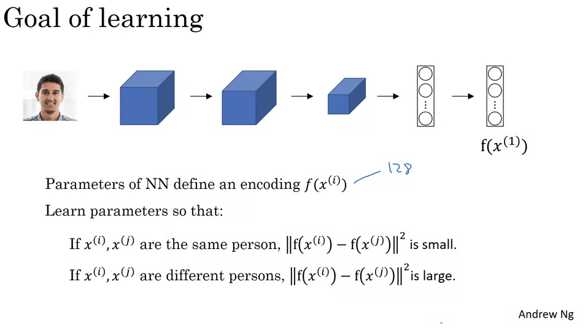
- Purpose of Function \(d\):
- It takes two facial images as inputs and calculates how similar or different they are.
- A common architecture to achieve this is the Siamese network.
- Traditional Convolutional Network (CNN) Overview:
- A typical CNN receives an image input, let’s denote it as \(x_1\).
- The CNN processes the image through a series of convolutional, pooling, and fully connected layers.
- This generates a feature vector, sometimes used for classification using a softmax unit.
- However, for our Siamese network, we won’t be using softmax. Instead, we’ll focus on this feature vector.
- Encoding with the Siamese Network:
- The feature vector generated by the CNN can be termed as an “encoding” of the input image.
- This encoding, \(f(x_1)\), is a set of numbers (e.g., 128 numbers) that represents the input image.
- To compare two images, both images are fed into identical neural networks (with the same parameters) to generate their respective encodings.
- Computing the Distance:
- If we have two images, \(x_1\) and \(x_2\), their encodings are \(f(x_1)\) and \(f(x_2)\) respectively.
- The distance \(d\) between \(x_1\) and \(x_2\) can be computed as the norm of the difference between their encodings.
-
Mathematically: $$d(x_1, x_2) = f(x_1) - f(x_2) $$
- Siamese Neural Network Architecture:
- This strategy of using two identical CNNs to process two different inputs and then comparing their outputs is termed as a Siamese neural network architecture.
- Much of the foundational knowledge of Siamese networks comes from a research paper detailing the DeepFace system, authored by Yaniv Taigman, Ming Yang, Marc’Aurelio Ranzato, and Lior Wolf.
- Training the Siamese Network:
- Both CNNs in the Siamese architecture share the same parameters.
- The goal is to train the neural network to compute encodings that result in a small distance \(d\) when two pictures are of the same person and a large distance otherwise.
- Formal Objective:
- If \(x_i\) and \(x_j\) are images of the same person, their distance \(\|\|f(x_i) - f(x_j)\|\|\) should be small.
- If \(x_i\) and \(x_j\) are images of different people, their distance \(\|\|f(x_i) - f(x_j)\|\|\) should be large.
- The parameters of the CNN layers influence these encodings. Using backpropagation, the network is trained to ensure that the above conditions are satisfied.
- Objective Function for Training:
- To train the Siamese network effectively, a suitable objective function is needed.
- The next discussion will delve into how to define such an objective function, using the concept of the triplet loss function.
- In summary, Siamese networks provide an efficient way to handle the one-shot learning problem by focusing on similarities between images, rather than classifying them directly. The key lies in generating robust encodings of the images and then comparing these encodings to determine similarity.
Triplet Loss for Neural Network Training in Face Recognition
- Basics:
- Objective: Learn parameters of a neural network to get a good encoding for face images.
- Uses gradient descent on the triplet loss function.
- Always compares three images:
- Anchor
- Positive (same person as the anchor)
- Negative (different person from the anchor)
- Mathematical Representation:
- Want distance between Anchor and Positive (
d(A,P)) to be smaller than the distance between Anchor and Negative (d(A,N)) by at least a margin (α). - \[||f(A) - f(P)||^2 - ||f(A) - f(N)||^2 + \alpha \leq 0\]
- Want distance between Anchor and Positive (
- Triplet Loss Function:
-
Defined on triples of images: $$L(A, P, N) = max( f(A) - f(P) ^2 - f(A) - f(N) ^2 + \alpha, 0)$$ - The goal: Minimize this over the dataset.
-
- Important Points:
- To train, you need multiple images of the same person.
- Choosing triplets isn’t random. You choose “hard” triplets, where
d(A,P)is close tod(A,N)to ensure efficient training. - Systems like FaceNet by Florian Schroff, Dmitry Kalinichenko, and James Philbin recommend these methods.
- Training on Large Datasets:
- Commercial systems often train on very large datasets, often over a million images.
- Due to the size and difficulty in gathering such datasets, it’s common to use pre-trained models in the industry.
- However, understanding the training process is crucial if one has to train from scratch or make modifications.
Face Verification and Binary Classification
- Triplet Loss and Binary Classification:
- Triplet Loss: Commonly used in face recognition systems. It works by taking an anchor image, a positive image (same person as anchor), and a negative image (different person than anchor) and adjusting the neural network weights to bring the anchor and positive images’ encodings closer, and push the anchor and negative images’ encodings apart.
- Binary Classification: An alternative to Triplet Loss. In this method, pairs of images are fed into a Siamese network, which then computes embeddings for both. A logistic regression unit can then be used to determine if the images are of the same person (output = 1) or different people (output = 0).
- Computing the Similarity:
- Instead of directly feeding encodings to the logistic regression unit, the difference between encodings can be used. This difference can be calculated in various ways, for example:
- The element-wise absolute difference between encodings.
- The chi-square similarity formula, among others.
- This difference serves as the feature to the logistic regression, which then predicts if the images are of the same person or not.
- Instead of directly feeding encodings to the logistic regression unit, the difference between encodings can be used. This difference can be calculated in various ways, for example:
- Training the Siamese Network:
- The network is trained using pairs of images where the output is 0 (different persons) or 1 (same person).
- The weights and parameters of the two networks in the Siamese architecture are tied, meaning they’re identical and updated simultaneously during training.
- Pre-computation of Encodings:
- For efficient deployment, especially with large databases, pre-computed encodings can be used. Instead of computing encodings for each image in the database every time a new image needs to be verified, the encodings for the database images can be pre-computed and stored.
- When a new image comes in, only its encoding needs to be computed, which can then be compared with the pre-computed encodings, saving significant computational resources.
- Conclusion:
- Face verification can be approached as a supervised learning problem, where pairs of images form the input data. These pairs are labeled either 1 (if the images are of the same person) or 0 (if they are of different people).
- The binary classification approach to face verification and recognition works effectively, enabling one-shot learning.
Deep CNNs
- What Do Deep CNNs Learn?
- Layer 1:
- In the initial layer of CNNs, individual neurons (or hidden units) often look for simple features like edges or specific colors.
- By analyzing the image patches that maximally activate each neuron in the first layer, it’s observed that different neurons tend to activate for specific edge orientations or colors.
- For instance, one neuron might activate for vertical edges, while another might activate for green regions in the image.
- Layer 2:
- As you move deeper into the network to the second layer, the patterns that activate the neurons become more complex.
- Instead of just edges or colors, layer 2 neurons might activate for textures, basic shapes, or specific orientations of lines.
- For example, a neuron might activate for circular patterns or another for vertical line textures.
- Layer 3:
- Moving further deep, the third layer detects even more complex patterns and shapes.
- The neurons here can get activated by parts of objects like wheels, specific textures, or even parts of animals like legs.
- It begins to assemble the simple patterns from earlier layers into more recognizable object parts.
- Layer 4:
- In this layer, the neurons have the capability to recognize more complex objects or parts of objects.
- Some neurons might serve as rudimentary “dog detectors”, activating for specific breeds of dogs, while others might activate for specific textures like water or the legs of a bird.
- Layer 5:
- In the deepest layers, the network is capable of recognizing sophisticated objects and patterns.
- For instance, one neuron might activate for various types of dogs, while others detect keyboards, text, or flowers.
- These are quite advanced features, integrating a lot of the simpler features from earlier layers.
- The intuition gained from understanding what individual layers in a CNN are computing can be beneficial. In the context of the video, this understanding will be used to devise a neural-style transfer algorithm.
- Overall, as we progress deeper into a neural network, the complexity of features that the network can recognize increases, starting from simple edges in the early layers to full object detection in the deeper layers.
Neural style transfer
- Neural Style Transfer aims to produce an image that blends the content of one image and the style of another. Here’s a breakdown of how it works:
- Problem Formulation:
- You have a content image (C), a style image (S), and you aim to produce a generated image (G).
- Cost Function:
- The cost function, \(J(G)\), measures the quality of the generated image.
- The cost function comprises two main components: the content cost and the style cost.
- Content Cost:
- Measures how similar the content of G is to the content of C.
- Style Cost:
- Measures how similar the style of G is to the style of S.
- Weighting Hyperparameters:
- \(\alpha\) and \(\beta\) are hyperparameters to adjust the relative importance of the content and style cost. Using two hyperparameters follows the original paper’s convention, even if it might seem redundant.
- Algorithm Procedure:
- Initialization: Begin with an image G that is randomly initialized.
- Gradient Descent: Define the cost function \(J(G)\). Adjust the pixel values of G using gradient descent to minimize \(J(G)\). This process updates the pixel values of G.
- Example:
- Given a content image and a style image, a randomly initialized G starts as white noise. With iterations of gradient descent, G evolves to represent the content of the content image in the style of the style image.
- Next Steps:
- Dive deeper into defining the content cost function and the style cost function.
- The foundation of the Neural Style Transfer Algorithm comes from the paper by Leon Gatys, Alexander Ecker, and Matthias. After understanding the high-level overview, the subsequent steps involve understanding the intricate details of the cost functions.
Cost function
For the Neural Style Transfer algorithm, the cost function has two parts: content cost and style cost. Let’s delve into the Content Cost:
- Purpose of Content Cost:
- The content cost ensures that the generated image G resembles the content of the original content image C.
- Selection of Layer l:
- Using too shallow a layer (e.g., layer 1) forces G to have pixel values closely resembling C.
- Using a very deep layer ensures only high-level content resemblance (like ensuring a dog in C results in a dog somewhere in G).
- In practice, the layer l used for computing the content cost is chosen from the middle layers of the neural network.
- Using Pre-trained CNN:
- A pre-trained convolutional network, such as VGG, can be employed to compute content cost.
- Measure the similarity of the content between the content image C and the generated image G using activations from the chosen layer l. Represent these activations as \(a^{[l](c)}\) and \(a^{[l](g)}\).
- Computing the Content Cost:
- If the activations of layer \(l\) for images C and G are similar, it implies the contents of the images are also similar.
- The content cost \(J_{content}(C,G)\) is computed as the squared difference of the activations from layer \(l\) for both images.
- This involves element-wise subtraction and squaring of the difference. The result gives an idea of how similar/different the content of both images is at that layer.
- To clarify, the activations are unrolled into vectors, making it a squared L2 norm of the difference between the two activations.
- This essentially boils down to the sum of squared differences between the activations for the content and generated images at layer \(l\).
- Gradient Descent:
- When gradient descent is applied to minimize the cost function \(J(G)\), the content cost component encourages the algorithm to generate an image G with activations similar to the content image C at layer l.
Style cost function in neural style transfer
- Style Definition:
- The style of an image is defined based on the correlation between activations across different channels in a certain layer.
- If two channels are highly correlated, it implies that the features those channels detect appear together in the image.
- Style Matrix:
- For a given image and a specific layer, the “style matrix” (or Gram matrix) is computed. This matrix captures the correlations between the activations of each channel in that layer.
- The element \(G_{kk'}\) of the style matrix is the unnormalized correlation between channels \(k\) and \(k'\) across all positions of the image.
- Style Cost Function:
- For a given layer, the style cost between a generated image \(G\) and a style image \(S\) is the difference between their respective style matrices for that layer.
- The Frobenius norm of the difference between these matrices (squared) gives a measure of how different their styles are.
- To make the algorithm robust and generate visually appealing results, the style cost is computed across multiple layers and combined, giving different layers different weights.
- Overall Objective:
- The overall objective for neural style transfer is a combination of the content cost (ensuring the generated image resembles the content image) and the style cost (ensuring the generated image has the style of the style image).
- This objective is minimized using gradient descent or other optimization techniques to produce the final stylized image.
- Finally, this technique allows for the generation of unique artwork by blending the content of one image with the style of another. This exciting combination of art and AI has led to many innovative applications and showcases the creative potential of deep learning.
1D and 3D Generalizations
- So far, the predominant focus has been on 2D data like images, but the principles of CNNs can be extended to 1D and 3D data as well.
- 2D CNNs:
- Typical examples involve images.
- Convolution operation involves taking a 2D filter (e.g., 5x5) and moving it across a 2D input (like a 14x14 image) to produce an output (e.g., 10x10).
- If the image has multiple channels (like RGB with 3 channels), the filter must also have matching channels.
- 1D CNNs:
- Example provided was the Electrocardiogram (EKG or ECG) data, which measures heart beats over time.
- Instead of 2D filters, one would use 1D filters.
- This allows detection of features like heartbeats in time series data.
- While Recurrent Neural Networks (RNNs) are popular for 1D data, some practitioners also experiment with CNNs.
- 3D CNNs:
- An example of 3D data is the CT scan, which provides slices of human body, giving a three-dimensional perspective.
- For 3D CNNs, one would use 3D filters to detect features across 3D data.
- This can be applied to data such as medical scans and movie data, with the latter treating different time frames as “slices” in a 3D volume.
- In conclusion, while 2D data (images) are the most common application for CNNs, the principles can be effectively applied to 1D and 3D data. The course on CNNs concludes with this discussion, and the next course will delve into sequence models like RNNs.